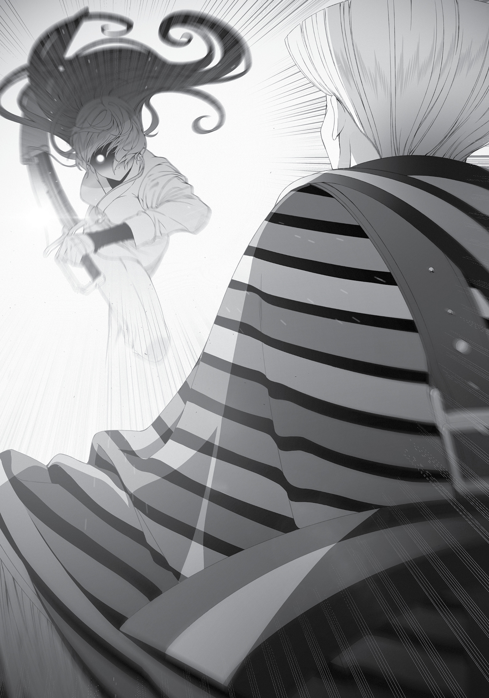

Side Story:
The Sharpening of Fangs
ON A NAMELESS CAPE, just an hour’s journey on foot north of the Sword Sanctum, a lone girl was swinging her sword—a simple swing with no technique that belonged to the Sword God Style or anything else. The girl’s name was Eris Greyrat.
Eris Greyrat mindlessly swung her sword. There in that space, all by herself, with no other soul around. Just mindlessly, mindlessly swinging. A swing weighed down by idle thoughts was a meaningless one. A swing that merely mimicked the motions of others was meaningless, too. But if your sword was pure, empty of thought, then each swing would sharpen your skills.
She would keep honing her abilities, cutting away slice by thin slice until the way before her was clear enough that she could see through to the other side. Each slash made her that much stronger. How much more repetition was required? Just how long would she have to continue before she’d reach Orsted’s level?
Eris didn’t know. No one did. Perhaps she would never be able to reach that level, no matter how hard she worked.
Such thoughts were exactly the meaningless kind she was supposed to avoid. “Tsk.” Eris clicked her tongue. She shook her head and sat down to think.
It was annoying. She wanted to defeat Orsted, but the more she thought about it, the further he seemed to get from her. At one point, her master Ghislaine had told her, “Think.” Eris, however, was bad at thinking. No matter how much she wracked her brain, she couldn’t produce an answer that satisfied her.
Compared to that, her second teacher, Ruijerd, had been much better. “Do you understand?” he would ask. He would knock her down, then just ask whether she understood or not. Over and over again, he would keep going until she finally got it. Without her having to use her head, as if they were equals.
Eris respected Ghislaine. She also respected Ruijerd. Frustratingly, the Sword God’s teachings combined the good parts of both of the people she respected. He had ordered her thusly: “Just swing your sword without thinking. Don’t think, just swing, and when you get tired, then think. When you’re tired of thinking, stand back up and swing again.” So she did just that. She swung, sat, swung, sat. When she got hungry, she ate. Then she repeated the process of swinging her blade and sitting all over again.
At first, she did this at the training hall. When she did that, however, someone would inevitably get in her way. The usual culprits were other girls from the training hall. They would say, “Hey, we’re doing fighting practice this morning, join us,” or, “Hey, food is ready, so come eat,” or, “Hey, can you train with me a bit?” or, “Hey, you stink, go take a bath.” Things of that sort.
It had become so annoying that Eris just left the training hall. She left and continued walking until she found an unoccupied bit of land and started practicing there. She ate what she’d brought with her from the training hall’s kitchen, or whatever monster occasionally tried to attack her. When it was cold outside, she fetched logs from the training hall and used magic to light them for warmth. When she got tired, she would return to the training hall and sleep as much as she wanted.
This had been her daily life for the past six months.
There was one thing that Eris did understand. Mastering the sword was difficult. When she was younger, she’d thought swordplay so much simpler and more suited to her than studying. Well, that part was still true: Swordplay suited her far better than book learning ever had. But it definitely wasn’t simple at all. In fact, you might even say book learning was simpler, as long as you had someone else teaching you.
All she did was raise her sword and bring it back down again. Yet for some reason, she couldn’t get good at it. She should be able to raise it faster. She should be able to strike faster. But she hadn’t managed to achieve her desired speed. She had to be faster now than she had been six months ago, but Ghislaine was still faster. Ruijerd was faster. The Sword God was faster. And Orsted, of course, was faster.
She tried to recall the way they fought—the Sword God, Ruijerd, and Orsted. How had they each moved? She tried to imitate their movements, from the tips of their fingers to their shoulders, all the cells in their body. Then she tried to go beyond that, to transcend them.
Except she didn’t know how. There was no way she could.
Eris was bad at thinking.
Once she was exhausted by the endless cycle of thoughts running through her head, she stood back up and started practicing her swings again. She swung without thinking about anything. Up, down. Faster. Up, down. Faster. She went through ten repetitions, a hundred, then a thousand. When she did, idle thoughts began to filter in again. That happened when she got tired.
“Tch.” She clicked her tongue once, then took a seat. Her hands hurt. Blisters had broken open on them. She produced cloth from her pocket and disinterestedly wrapped it around her hands.
It hurt, but it wasn’t painful. She could always recall what happened three years ago at the Red Wyrm’s Lower Jaw. Compared to that, she felt like she could withstand anything. Pain meant nothing to her; not the ache in her hand, not her frustration. Not even the fact that she was by herself right now, without him by her side.
“Rudeus.” She breathed out his name.
Eris didn’t think about it any further. She was bad at thinking. She also wasn’t very good at staying positive. The more she thought, the more she realized she could break.
“Phew.”
Three years. She thought she’d gotten stronger, but it still wasn’t enough.
Eris stood up and started swinging her sword again.
Tamping down her drowsiness, Eris headed back to the training hall. At its entrance stood a man she didn’t recognize—a striking man, at that. His robes were dyed in rainbow hues, and below them, he wore only knee-length boots, with four swords at his waist. On his cheek was a peacock tattoo, and his hair was gathered up in a style that fanned open at the top, like a parabola. When he spotted Eris, he bowed his head slightly and attempted to greet her.
“I am the North—”
“Move.” Eris spoke a single word to the man standing between her and the training hall. She did not care to say anything more. She’d sharpened herself to her very limits with all the swinging she’d done. The glint in her eye as she glared was that of an aggressive beast. Murderous intent swelled from her like an all-consuming blaze. She was a wild animal that wouldn’t let anyone come close.
“What…?!” The man immediately drew his sword.
“You’re in my way.” Eris took a step forward as she spoke. To her, the man before her was nothing but an obstacle. One standing between her and her nest.
“Wh-what in the world is this creature…?” At first, the man didn’t even understand that words had come out of her mouth. For a moment, all he saw was a starved beast looking for a meal. Then Eris drew a blade of her own, and he finally realized she was human, and a swordfighter at that.
“You may refer to me as Auber, the Peacock Blade,” he said. “I see that you are a student of the Sword God Style. Might I request that you guide me to meet with the Sword God—”
“I told you to move.” Irritated, Eris took another step forward.
She was telling him to get out of her way. However, those words didn’t register with the man called Auber. The only thing that did was Eris’ murderous intent. That and the realization that talking was pointless. With that, Auber—with one sword in his right hand—reached for the shorter sword at his waist with his left. However, he wielded his weapon in reverse, brandishing the flat side of the blade at her.
At striking distance, Eris decided she would remove the obstacle in her path by force. Shkt! Her blade whizzed through the air. She was using Sword of Light, an ability honed through all of her practice. A normal opponent had no hope of countering the Sword God Style’s most lethal technique.

“Hmph!”
That was only if they were a normal opponent, however. Auber gripped both swords in his hands and used them to brush off the attack. Eris had perceptively anticipated his reaction and was now swinging her blade back in the opposite direction.
“Ah…!”
Eris’ sword was stopped by the one in Auber’s left hand. She was using two hands to wield hers, where he was using only one, but he easily deflected her attack. Her blade slid off to the side, merely clipping the edge of his hair. Eris’ body followed the momentum of her blade, causing her to stumble on her pivoting foot. At that exact second, Auber’s right hand flew toward her exposed neck.
“Tch!” Eris discarded her sword and dropped to the ground in a crouch. Auber’s weapon plowed through the empty space where she’d just been. Eris moved like a cat, flipping herself back over. She was trying to retrieve her sword.
Auber kicked her weapon away and it vanished into the snow. Normally, that would be the end of the match. But Eris didn’t stop. The moment she realized her sword was lost, she flew at Auber with her fists instead. Auber slammed the center of his blade against her cheek with enough force to shatter her cheekbone. It left a single cut on her face.
However, even after that, Eris still didn’t stop. “Graaah!” She swung at his jaw.
Auber tried to stop her by using the weapon in his left hand. “Mrgh!” Her hand tangled with his. Her fingers hooked around the hilt. Auber felt a chill run down his spine as he realized she was trying to steal his sword from him. This beast wouldn’t stop until he killed it.
He gave the woman coiled around him a hard kick, sending her hurtling through the air. Then he readjusted his grip on his weapon, so the blade was now facing her.
Luckily for Eris, when he launched her through the air, she fell right where her sword had landed earlier. Her breathing was uneven as she took up the weapon. She had to kill him.
It was then, as Auber wielded his blade in earnest and began emitting a murderous intent of his own, that a voice suddenly cut in. “That’s enough.”
The bloodlust ended. Eris was already frozen in place, having sensed the change in demeanor from her opponent. The Sword God had appeared without them realizing and was now standing at the entrance of the training hall. Auber put away his sword, and Eris flopped down on her back. She stared at the sky, still breathing hard. Her face was twisted in frustration.
Auber put his right hand to his chest and bowed his head. “It has been too long, Master Sword God.”
“So you came, North Emperor.”
“I read your letter. And then that girl attacked.”
“Ahh, incredible, isn’t she?”
“It’s the first time I’ve seen a swordfighter that relentless. She was almost like a beast. Ahh, so this is the child they refer to as the Mad Dog.”
Eris listened to their conversation as she stood up. The way she drifted unsteadily forward made her look unearthly. Seeing her, Auber readied his sword again. But Eris just glowered at him and entered the training hall, vanishing into the building without a second glance at the man who was left dumbfounded in her wake.
She wiped at the wound on her cheek as she headed down the hall toward her room, not bothering to brush off the snow clinging to her body. Then, when she got to her destination, she threw her sword at the base of her pillow and sagged down onto the hard bed. Just like that, she fell fast asleep. She was frustrated at her loss, but right now that was a trivial matter.
***
That evening, Ghislaine visited the Ephemeral Hall. Seated within were the Sword God Gall Farion and his guest, the North Emperor Auber. Ghislaine’s brows were slightly furrowed, but she showed no outward sign of paying Auber any attention as she tromped over to the Sword God and bluntly asked: “Master, why aren’t you teaching Eris anything?”
The Sword God listened and chuckled. “Already did, didn’t I?”
“How to swing her sword, you mean?”
“No. How to temper herself,” he answered as if it were obvious. The normal roughness in his voice was absent. A quiet response.
Ghislaine didn’t care much for that side of him. That was why she rounded up what smarts she had and chose her words carefully. “You always said it yourself: ‘Do everything logically.’”
“I did.”
“So what are you doing with Eris? She’s out there swinging her sword every day like an idiot who doesn’t know anything else. What part of that is logical?”
“Hm?” He looked annoyed. “Since when did you become such a nag?”
“Since before I came back here!”
“So you ain’t gonna listen to what your master tells you anymore?”
“But—ugh!”
Ghislaine suddenly had a sword thrust at her. To an ordinary person it would have seemed as if the weapon just magically appeared in the Sword God’s hand. Ghislaine, however, could see him unsheath it. She just wasn’t able to react in time. In the face of the fastest man in the world, no one could, not even a Sword King.
“Ghislaine. Y’know, I kinda regret the way I taught you.”
“…”
“You used to be like a starved tiger, but now you’re like a kitten that’s lost its fangs. If you’d have stayed the way you were, you’d be a Sword Emperor by now.”
Ghislaine swallowed hard at his words. She did feel she’d gotten weaker recently, though she didn’t think it was all bad. It was true that her growth with the sword had stagnated. Still, she’d gained important things in exchange: intelligence and wisdom. Things she wouldn’t have been able to get from mastering the sword.
“I’m not going to let Eris lose her fangs too.” Gall put his sword away as if to say, Now you understand, don’t you?
Ghislaine sulked as she responded, “I don’t understand. Why won’t you have her train?”
The Sword God heaved a sigh, recalling that Ghislaine was the kind of child who needed thorough explanations to understand. “Listen. If someone wants to get better than me, they gotta be able to figure stuff out for themselves. That was how I got to where I am, after all. Of course, they’ll need the requisite amount of talent and hard work to deserve the title ‘Sword God,’ but let’s leave that aside. Eris’ objective is the Dragon God Orsted. His existence defies logic. He’s a monster beyond imagination. She cannot beat him with my teachings alone.”
The man had a nostalgic look on his face as he finished speaking. He had actually fought the Dragon God himself, back before he was called the Sword God, back when he was just a strong, yet arrogant Sword Saint. He lost miserably—to the point where he still wasn’t sure why his life had been spared, or more importantly, why all of his limbs were still intact.
Having had his ego beat out of him, he’d made surpassing Orsted his goal, and had trained to that effect ever since. That was how he became the Sword God. That was also exactly why he didn’t want anyone else butting their head into this matter.
“Hey, Ghislaine, doing drills isn’t the same thing as training, you know? Especially if you have something you’re aiming for. There’s no point in acting like an obedient dog and doing whatever someone else tells you. You get it?”
“Master, you always say such complicated things. I don’t understand.”
“Hah.” He snorted in laughter at her response. That’s right, this idiot won’t understand if I don’t explain it all clearly. “In other words, it means just learning from me won’t do her any good. That’s why I’ve prepared a bunch of stuff for her, beginning with him.”
The Sword God gestured at Auber, who in turn dipped his chin in greeting. “I am North Emperor Auber Corbett. On the streets, they refer to me as the Peacock Blade.”
Ghislaine screwed up her face. There was an indescribable stench wafting off of the man. It wasn’t body odor, but something powerfully citrus-y. Most likely cologne. An unpleasant scent for beastfolk like Ghislaine. “And what is someone from the North God Style doing here?”
“Responding to the Sword God’s request that I instruct one of his pupils.”
Her expression turned more suspicious as she questioned the Sword God. “Why someone from the North God Style? I don’t see how their underhanded tricks would suit Eris.”
“Because the Dragon God will use them against her.”
The doubt on Ghislaine’s face only deepened. She had never heard anything about the Dragon God being a swordsman of the North God Style. “Just who is this Dragon God?” she asked.
“Hell if I know. What I do know is that he’s got every move from the Sword God Style, North God Style—all those schools of swordfighting—in his arsenal. Naturally that means he can use them, and will be able to counter any used against him. You gotta learn them as well, ’cause if you don’t, you won’t be fighting on even footing.”
Ghislaine’s expression lost its sharp edge. Learning the techniques that your opponent would use against you—that was logical. “I see. Then eventually you’ll be summoning someone from the Water God Style as well?”
“Yep, already sent a letter.”
“Is that right?” Her tail wagged happily.
The Sword God smiled wryly at that. Ghislaine would be satisfied as long as the answer was something she could easily understand. That part of her never changed.
“Well then, Master North Emperor, I hope you have a relaxing stay here.” Now that Ghislaine’s doubts had been dispelled, she stood up and paid her respects to the North Emperor. She got down on one knee, as was the unique etiquette of the Sword God Style.
“Indeed, Master Sword King. I hope that we can have an amicable relationship during my time here.” Auber also put a hand to his chest and returned the gesture.
With that, Eris’ training moved on to the next stage. A year later, she would be recognized as a North Saint.